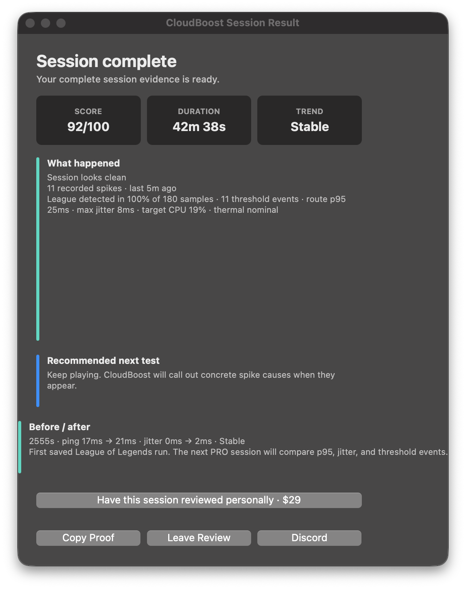

GeForce NOW, xCloud, Boosteroid, Shadow PC, Moonlight e PS Remote Play.
Reduza o ruído local do macOS e veja se o problema é Wi-Fi, UDP, perda de pacotes, latência de rota ou tráfego em segundo plano.
CloudBoost 4.4.1 · Utilitário nativo para macOS
Veja o pico. Separe a pressão do Mac dos problemas de rede. Termine a sessão com evidências.
O CloudBoost monitora picos de latência, jitter, perda de pacotes, rotas de VPN, ruído de Wi-Fi/AWDL, processos em segundo plano, temperatura e pressão da CPU sem modificar seus jogos.

Escolha o seu ponto de partida
Escolha o tipo de sessão mais próximo. O app utiliza o mesmo fluxo simples para cada um.
Uma sessão, três respostas
Colete os sinais que o ping médio esconde: jitter, perda de pacotes, rotas, ruído de Wi-Fi e carga local.
Separe um problema ativo de um pico anterior e veja a causa provável em linguagem clara.
Alique ações temporárias selecionadas, grave o que mudou e restaure as configurações quando terminar.
Casos de Uso
Use o CloudBoost quando a sessão começar bem e depois apresentar travamentos ou instabilidade. Ele analisa os sinais de rede e do sistema Mac, indicando quando a causa investigada é o jogo, o servidor, o roteador ou a camada de compatibilidade.
Reduza o ruído local do macOS e veja se o problema é Wi-Fi, UDP, perda de pacotes, latência de rota ou tráfego em segundo plano.
Acompanhe pressão da CPU, temperatura, Modo de Pouca Energia e tráfego em segundo plano para entender gargalos do sistema.
O CloudBoost não altera arquivos dos jogos. Ele ajuda a separar problemas da camada de compatibilidade de um ruído de sessão do macOS.
Exporte uma imagem real da sessão, compare o primeiro salto com a rota externa e gere um Session Proof pronto para suporte.
Free e PRO
O Free é ideal para sessões manuais básicas. O PRO é para uso contínuo, diagnósticos profundos e otimização temporária automática.
Licença única da versão 4.x para um Mac. Sem assinatura. Trocas de máquina são tratadas pelo suporte.
Suporte
O Discord está aberto para usuários Free e PRO para ajuda na instalação, suporte de licenças, dúvidas e relatórios de bugs.
Se a verificação do publicador falhar, instale o DMG mais recente manualmente uma vez. As configurações e a ativação PRO são preservadas. Abrir versão oficial.
Não diretamente. O CloudBoost foca em estabilidade de sessão e diagnóstico. Ele ajuda quando os travamentos vêm de processos em segundo plano, ruído de Wi-Fi ou economia de energia, mas não altera a renderização do jogo.
Sim, quando o problema está no sistema ao redor do jogo: pressão térmica, Modo de Pouca Energia, tráfego em segundo plano ou oscilações de Wi-Fi.
Não. O CloudBoost não instala KEXTs, daemons ocultos, patches permanentes ou injeções em jogos. Algumas ações pedem senha de administrador apenas porque o macOS exige autorização para alterações temporárias do sistema.
O Session Proof é um relatório de suporte PRO gerado pelo app com os dados da sessão, histórico de picos e diagnósticos técnicos, sem incluir arquivos pessoais ou dados privados.
Uma nova licença PRO do Payhip ativa em um Mac e pode ser revalidada normalmente nele. Se você trocar de computador, fale com o suporte no Discord para solicitar a transferência sem comprar novamente.